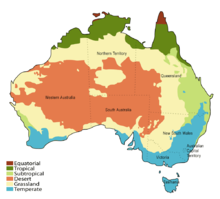
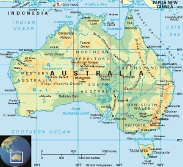

AUSTRALIA
Australia là một quốc gia có chủ quyền bao gồm lục địa của lục địa Úc , hòn đảo Tasmania và các hòn đảo nhỏ hơn. Đây là quốc gia lớn nhất ở Châu Đại Dương và là nước lớn thứ sáu thế giới theo tổng diện tích . Các quốc gia láng giềng là Papua New Guinea , Indonesia và Đông Timor ở phía bắc; quần đảo Solomon và Vanuatu về phía đông bắc; và New Zealand về phía đông nam. Thủ đô của Úc là Canberra , và khu vực đô thị lớn nhất là Sydney . Trong khoảng 50.000 năm trước khi có sự định cư đầu tiên của người Anh vào cuối thế kỷ 18 ,Úc có người Úc bản địa, người nói ngôn ngữ xếp loại vào khoảng 250 nhóm. Sau khi châu Âu khám phá lục địa bởi các nhà thám hiểm người Hà Lan vào năm 1606 , nửa phía đông của Úc đã được Anh tuyên bố vào năm 1770 và ban đầu định cư bằng vận tải hình sự đến vùng thuộc bang New South Wales từ ngày 26 tháng 1 năm 1788. Dân số tăng lên ổn định trong những thập kỷ tiếp theo, và vào thập niên 1850 hầu hết lục địa đã được khám phá và thêm năm vương quốc tự trị được thành lập. Vào ngày 1 tháng 1 năm 1901, sáu thuộc địa liên kết , thành lập Khối thịnh vượng chung Úc. Úc đã duy trì một hệ thống chính trị dân chủ tự do ổn định có chức năng như một chế độ quân chủ hiến pháp liên bang bao gồm sáu tiểu bang và một số vùng lãnh thổ. Úc có nền kinh tế lớn thứ 13 trên thế giới và thu nhập bình quân đầu người cao thứ chín. Với chỉ số phát triển con người cao thứ hai trên thế giới, quốc gia này xếp hạng cao trong chất lượng cuộc sống, y tế, giáo dục, tự do kinh tế , tự do dân sự và quyền chính trị. Úc là một thành viên của Liên Hợp Quốc , G20 , Khối thịnh vượng chung các nước , ANZUS , Tổ chức Hợp tác và Phát triển Kinh tế (OECD), Tổ chức Thương mại Thế giới , Hợp tác Kinh tế Châu Á - Thái Bình Dương và Diễn đàn Đảo Thái Bình Dương . Dân số 25 triệu có tính đô thị hoá cao và tập trung nhiều vào bờ biển phía đông. Australia có dân nhập cư lớn thứ 9 thế giới, với số người di cư chiếm 26% dân số.

Tên Úc (được phát âm là [əstɹæɪljə, -liə] trong tiếng Anh Úc) có nguồn gốc từ tiếng Latinh Terra Australis ("đất miền Nam"), tên được sử dụng cho một lục địa giả thuyết ở Nam Hemisphere từ thời cổ đại. Khi người châu Âu lần đầu tiên ghé thăm và lập bản đồ Úc vào thế kỷ 17, cái tên Terra Australis đã được áp dụng tự nhiên cho các lãnh thổ mới.

Cho đến đầu thế kỷ 19, Úc được biết đến như là " New Holland ", một tên được áp dụng lần đầu tiên bởi nhà thám hiểm người Hà Lan Abel Tasman vào năm 1644 (như Nieuw-Holland ) và sau đó được xếp vào danh sách. Terra Australis vẫn thấy thỉnh thoảng sử dụng, chẳng hạn như trong các bài viết khoa học. Tên Úc được phổ biến bởi nhà thám hiểm Matthew Flinders , người nói nó "dễ chịu hơn với tai, và đồng hóa với tên của những phần lớn khác của trái đất". Lần đầu tiên mà Úc được sử dụng chính thức là vào tháng 4 năm 1817, trong đó thống đốc Lachlan Macquarie thừa nhận đã nhận được bảng xếp hạng của Úc từ Lord Bathurst của Flinders. Tháng 12 năm 1817, Macquarie đề nghị với Văn phòng thuộc địa rằng nó được chính thức thông qua. [33] Năm 1824, Bộ Hải quân đồng ý rằng lục địa này phải được biết chính thức bằng tên đó. Việc sử dụng tên chính thức lần đầu tiên của tên mới đến với ấn bản năm 1830 của "The Australia Directory" của Văn phòng Thủy văn. Các tên thông tục cho Úc bao gồm " Oz " và "The Land Down Under" (thường được rút gọn thành " Dưới Dưới "). Các biểu tượng khác bao gồm "Great Southern Land", " Quốc gia Lucky ", "Nước Sunburnt", và "Vùng đất rộng rộng". Hai thứ hai cả hai xuất phát từ bài báo 1905 của Dorothea Mackellar " Quốc gia của tôi ".
.jpeg)